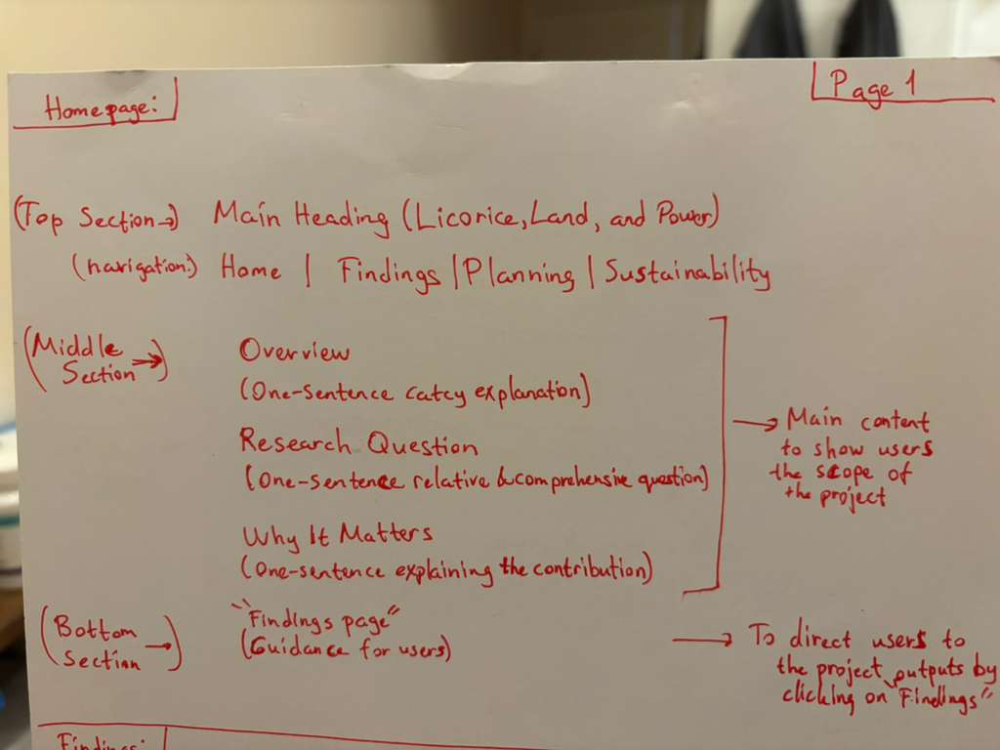
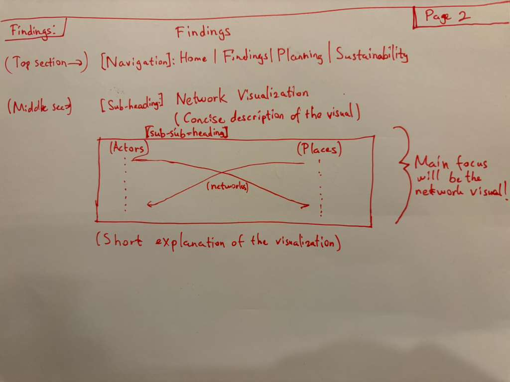
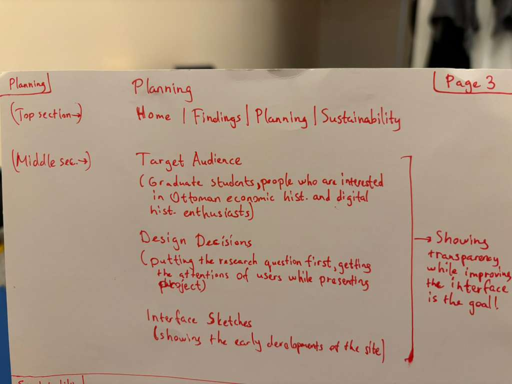
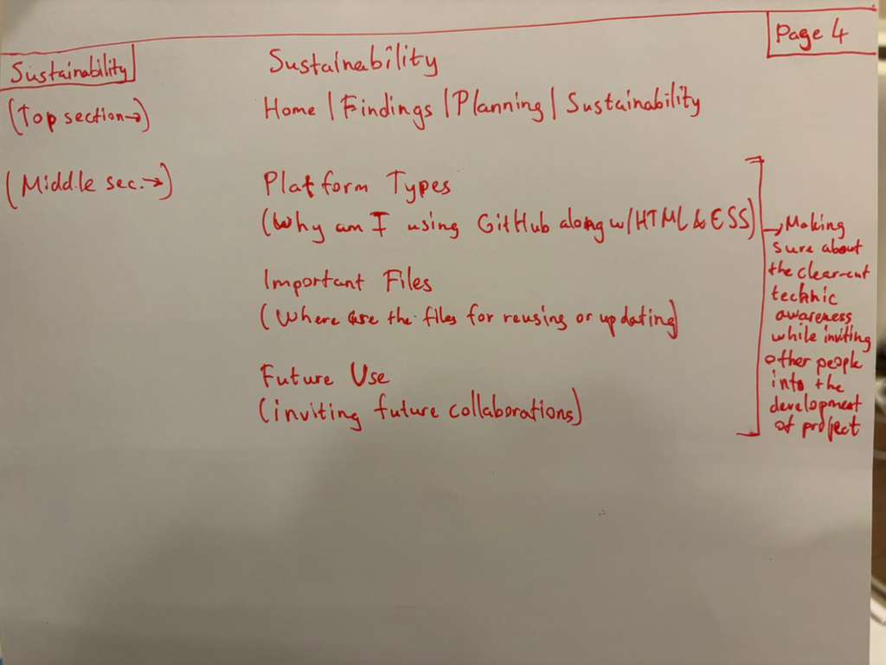

Target User
This site is designed for graduate students in history and humanities who are interested in Ottoman economic history but may not be familiar with digital methods or network visualization.
Design Decisions
I placed the research question prominently on the homepage so visitors can immediately understand the project’s focus. I used simple navigation to make the site easy to follow. The findings page centers the artifact so that the visualization becomes the main point of engagement.
Interface Sketches
The sketches below show the layout of each page.
Homepage Sketch

Findings Page Sketch

Planning Page Sketch

Sustainability Page Sketch
